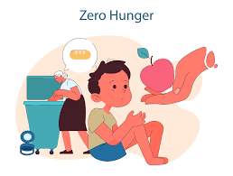
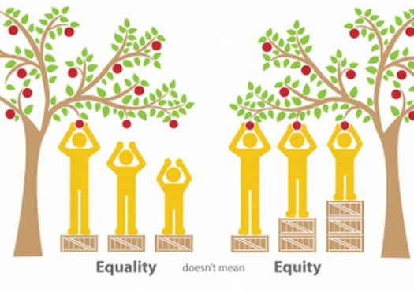

Food access and equity are crucial aspects of a just society. Ensuring that everyone has equal access to nutritious food is essential for public health and well-being.
Food insecurity refers to the lack of consistent access to enough food for an active, healthy life.
Equitable food systems aim to address disparities and ensure all individuals have access to nutritious and affordable food.
